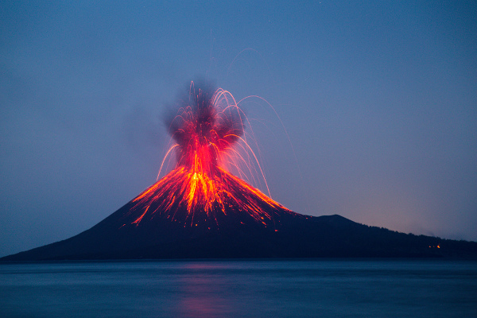
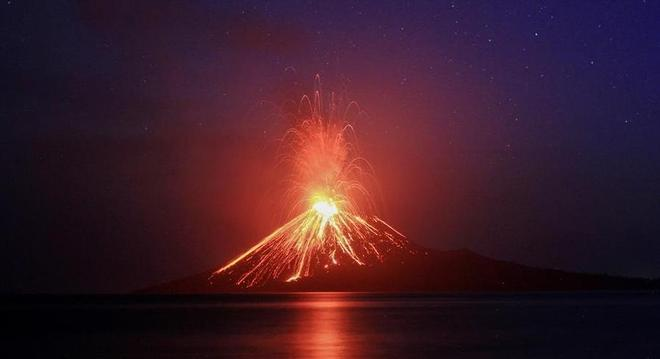

Vulcão Anak Krakatau, Indonésia
O que são os vulcões?
Muitas pessoas não sabem o que vulcões são ao certo, apenas que soltam um líquido muito perigoso. Devido à nossa sorte, não temos um vulcão ativo em nosso país, aja visto que estamos no meio de uma placa tectônica. Mas afinal, o que são os temidos vulcões? Vulcões são estruturas geológicas constituídas de massa de rocha fundida, devido às altas temperaturas em seu interior. Basicamente representam uma abertura na superfície terrestre capaz de expelir material magmático e gases vindos do interior do planeta. As erupções vulcânicas podem causar bastante destruição, especialmente quando sua área é habitada. Nem toda região do planeta há vulcões, e sua formação e distribuição estão relacionadas à existência das placas tectônicas.O vulcão Krakatoa em uma erupção
Atualmente, conhecemos milhares de vulcões, a maior parte deles encontrados no Círculo de Fogo do Pacífico. Também conhecido como Anel de Fogo do Pacífico, essa região é recheada de vulcões, onde a maior parte deles se encontra no estado de adormecido, mas ainda assim existe a possibilidade de algum dia entrarem em estado de ativo.Os três vulcões mais ativos do mundo se encontram no círculo de fogo, sendo eles o Monte Santa Helena (EUA), o Monte Fuji (JAPÃO) e o Monte Pinatubo (FILIPINAS).